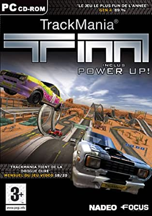
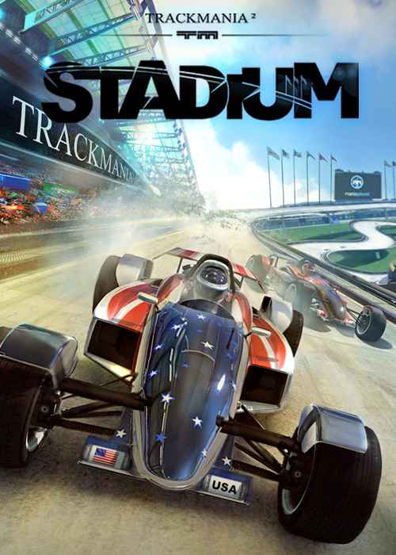
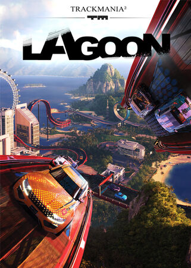
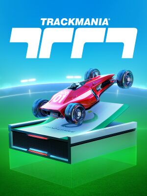
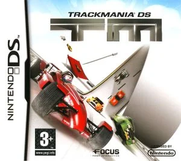
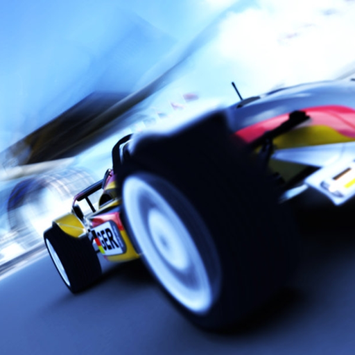

|
|
|
|
Bienvenue sur le portail de téléchargements de mon site. Vous retrouverez ici les anciens TrackMania fonctionnels pour Windows 10/11. Si vous n'avez pas confiances dans ces installeurs, recherchez sur YouTube les vidéos de St1ngLeR, qui montre comment patcher par vous-même les jeux. Enfin, si vous voulez télécharger les jeux, il faudra alors cliquer sur leur boite de jeu, visible sur le côté gauche de la page web. Bon jeu! |
|


 |
| JEUX TRACKMANIA MODDES |
| JEUX PC OFFICIELS PATCHES |
|  |
TrackMania Power Up est une extension du jeu de course de voitures TrackMania, développée
par la société française Nadeo et sortie en 2004 sur PC. Cette extension ajoute de nouveaux
éléments de jeu tels que des pistes plus complexes, de nouveaux blocs de construction de
piste, des modes de jeu supplémentaires et une nouvelle campagne solo. Le jeu propose également une fonctionnalité de replay qui permet aux joueurs d'enregistrer et de rejouer leurs courses pour améliorer leur temps ou partager leurs performances avec d'autres joueurs. Avec ses graphismes améliorés et son contenu enrichi, TrackMania Power Up a été bien accueilli par les fans de la série TrackMania. |
Win10 Win11 ===== |

|
TrackMania Sunrise eXtreme est une extension du jeu vidéo de course de voitures TrackMania Sunrise,
développée par Nadeo et sortie en 2005 sur PC. Cette extension ajoute de nouveaux environnements de jeu, des véhicules supplémentaires, des modes de jeu inédits et des circuits plus exigeants. Elle propose également une nouvelle bande sonore et des graphismes améliorés. TrackMania Sunrise eXtreme met l'accent sur la compétition en ligne, offrant des fonctionnalités multijoueur étendues et un classement mondial pour les joueurs les plus rapides. Avec son contenu enrichi et sa variété de circuits, TrackMania Sunrise eXtreme a été bien accueilli par les fans de la série TrackMania. |
Win10 Win11 ===== 828 Mo |
|  |
TrackMania 2: Stadium est un jeu de course de voitures développé par Nadeo et sorti en février 2013
sur PC. Le jeu se déroule dans un environnement de stade et est principalement axé sur la
compétition en ligne avec un gameplay arcade et des courses rapides. Le jeu offre un mode solo avec des courses et des défis pour les joueurs, mais se concentre principalement sur le mode multijoueur en ligne, qui permet aux joueurs de participer à des courses en temps réel contre d'autres joueurs du monde entier. Le jeu dispose également d'un éditeur de circuits avancé qui permet aux joueurs de créer et de partager leurs propres circuits personnalisés. TrackMania 2: Stadium a été bien accueilli par les fans de la série TrackMania pour son gameplay rapide et amusant ainsi que pour ses graphismes améliorés et son système de classement. Le jeu est également considéré comme l'un des meilleurs jeux de course en ligne disponibles sur PC. |
Win10 Win11 ===== 9,99€ |
|  |
TrackMania 2: Lagoon est un jeu de course développé par Nadeo et publié par Ubisoft en 2017. Le jeu se
déroule
dans un environnement tropical où les joueurs peuvent créer, partager et jouer à des courses de voitures sur
des pistes folles et déjantées. Le jeu offre une grande variété de modes de jeu, des courses en solo aux
compétitions multijoueurs en ligne, ainsi que des outils de création de pistes très avancés pour permettre
aux joueurs de concevoir leurs propres circuits personnalisés. Le gameplay est rapide et addictif, avec des
contrôles faciles à apprendre mais difficiles à maîtriser, et des graphismes colorés et détaillés qui
ajoutent à l'atmosphère exotique du jeu. |
Win10 Win11 ===== 19,99€ |
|  |
TrackMania 2020 est la dernière version de la célèbre franchise de course de voiture développée par Nadeo et
publiée par Ubisoft. Le jeu propose un nouveau moteur de jeu, des graphismes améliorés et une nouvelle
interface utilisateur. Il dispose également d'un nouveau système de progression avec un mode de campagne
solo, ainsi qu'un mode multijoueur compétitif en ligne. Les joueurs peuvent personnaliser leurs voitures
avec des skins et des accessoires, et le jeu dispose également d'un éditeur de niveaux pour créer des pistes
personnalisées. TrackMania 2020 est un jeu de course compétitif et divertissant qui met l'accent sur la
compétition en ligne, la personnalisation et la créativité. |
Win10 Win11 ===== Gratuit |
| JEUX TRACKMANIA SUR CONSOLES DE JEU |
|  |
TrackMania DS est un jeu de course développé par Firebrand Games et édité par Focus Home Interactive, sorti
en 2008 sur Nintendo DS. Le jeu propose un gameplay arcade axé sur la vitesse et l'adresse du joueur, avec
la possibilité de créer et partager ses propres circuits. Il comporte trois modes de jeu différents, dont un
mode solo où le joueur doit remporter des courses et gagner des médailles, ainsi qu'un mode multijoueur qui
permet de jouer en ligne ou en local jusqu'à quatre joueurs. Les graphismes sont simples mais efficaces, et
le jeu propose une bande-son énergique pour accompagner l'action. |
Nintendo DS ===== 32 Mo |

|
TrackMania Turbo est un jeu de course développé par Nadeo et édité par Ubisoft, disponible sur Xbox One. Le
jeu propose une expérience de course arcade avec des graphismes colorés, une bande sonore dynamique et des
mécaniques de conduite rapides et addictives. Les joueurs peuvent choisir parmi plus de 200 pistes réparties
sur quatre environnements différents, chacun avec son propre style de conduite unique. Le jeu comprend
également des modes multijoueurs pour défier des joueurs en ligne ou hors ligne dans des défis de
contre-la-montre ou des courses. Les joueurs peuvent également créer et partager leurs propres pistes
personnalisées à l'aide de l'éditeur de niveaux du jeu. En somme, TrackMania Turbo est un jeu de course
divertissant et stimulant pour les amateurs de courses arcade et de défis de vitesse. |
Microsoft Xbox One ===== 29,99€ |
| JEUX TRACKMANIA MOBILES |
|  |
TrackRacing est un jeu de course populaire pour Android, développé par Soulkey. Le jeu s'inspire de
TrackMania Nations et propose un gameplay similaire, avec des éléments tels que l'écran partagé pour 2
joueurs, un mode multijoueur, des clans, un accéléromètre et la fonctionnalité de flashback. Le jeu propose
également 20 cartes différentes pour défier les joueurs, avec des niveaux de difficulté variés. Bien que ce
jeu ne soit pas un jeu officiel de la série TrackMania, il est considéré comme une excellente adaptation
pour les appareils mobiles et est très apprécié par les fans de jeux de course. |
Android ===== Non jouable |
| CREDITS |
|
©2023 : vdepontac. Certains droits réservés. L'interface de ce site s'inspire du site-portail des développeurs de TrackMania Sunrise édité en 2005. Vous pouvez le retrouver avec une WayBack Machine |